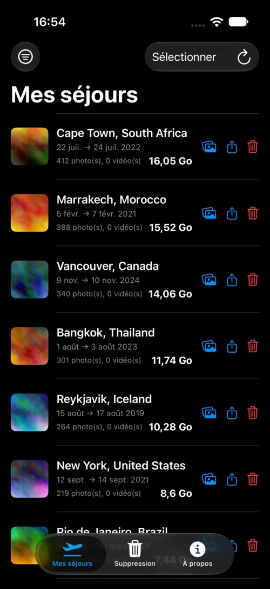
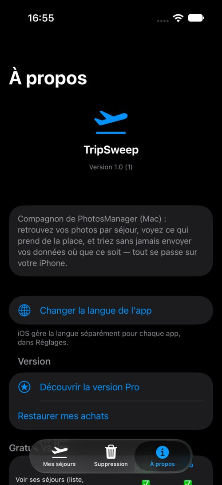

Enfin un moyen simple de faire le tri dans les anciens voyages
TripSweep regroupe vos photos et vidéos par séjour, pour voir exactement ce qui prend de la place, le sauvegarder ou l'envoyer à ceux qui y étaient, puis le supprimer en un geste — sans jamais envoyer vos données où que ce soit.
→ Découvrir aussi PhotoCull pour Mac, l'application de bureau qui trie vos photos

Un aperçu de l'app

Ce que fait l'app
Supprimez les vieux séjours sans hésiter
Voyez exactement ce qu'occupe un séjour, puis supprimez-le d'un coup — toujours via « Récemment supprimés », jamais de suppression définitive immédiate.
Sauvegardez-le, ou envoyez-le à ceux qui y étaient
Exportez tout un séjour vers votre Mac ou Fichiers avant de le supprimer, ou partagez-le directement (AirDrop, Fichiers...) avec vos proches — rien n'est perdu pour de bon.
Regroupement automatique par séjour
Vos photos et vidéos sont regroupées par voyage — en tenant compte à la fois du temps et du lieu, pour ne pas mélanger deux destinations différentes.
Le poids qui compte
Chaque séjour affiche l'espace qu'il occupe. Triez par poids pour repérer en un coup d'œil ce qui vaut vraiment la peine d'être trié.
Lieux personnalisés
Définissez vos lieux (Domicile, Travail...) et excluez-les de la liste pour ne garder que les vrais voyages.
100% hors ligne
Aucune photo ni position ne quitte votre iPhone. La reconnaissance des lieux fonctionne entièrement sans connexion, sans compte, sans service tiers.
Disponible en 5 langues
Français, anglais, italien, allemand, espagnol — l'app s'adapte automatiquement à la langue de votre iPhone.
Votre vie privée, prise au sérieux
TripSweep ne collecte, n'envoie et ne partage aucune de vos photos, vidéos ou données de localisation. Tout le traitement — reconnaissance de lieux incluse — se fait localement sur votre iPhone.
Lire la politique de confidentialité complète